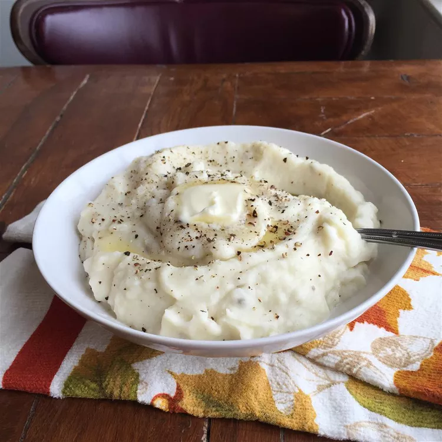

Mashed Potato

Holiday ONLY Mashed Potatoes
These mashed potatoes are too fattening to have on a regular basis. I only make these on holidays, and everyone wonders what's in them that's makes them so rich...
Ingredients
- 5 pounds red potatoes, peeled and quartered
- 1 cup heavy cream
- ½ cup butter
- salt and pepper to taste
Directions
- Place potatoes in a large pot with enough water to cover. Bring to a boil, and cook until fork tender, about 20 minutes. Drain, add butter, and mash using a potato masher, ricer or mixer. Gradually beat in the heavy cream. Serve hot!